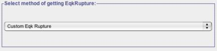

Earthquake Rupture Gui
This panel gets visible when user clicks on the Earthquake Rupture tab within the ScenarioShakeMap Application.
This panel allows user to either define their own custom rupture or choose a rupture already existing in Earthquake Rupture Forecast (ERF) Model. By default, when application is launched rupture from a existing ERF model is selected, but user can define his/her own rupture by modifying the parameter Select method of getting Earthquake Rupture from Select EqkRupture from an ERF to Custom EqkRupture as shown in Fig -1.
|  |
| Fig -1: Using this parameter user can either create his own rupture or select a rupture from already existing ERF models. |